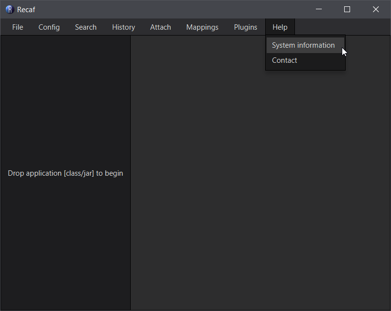
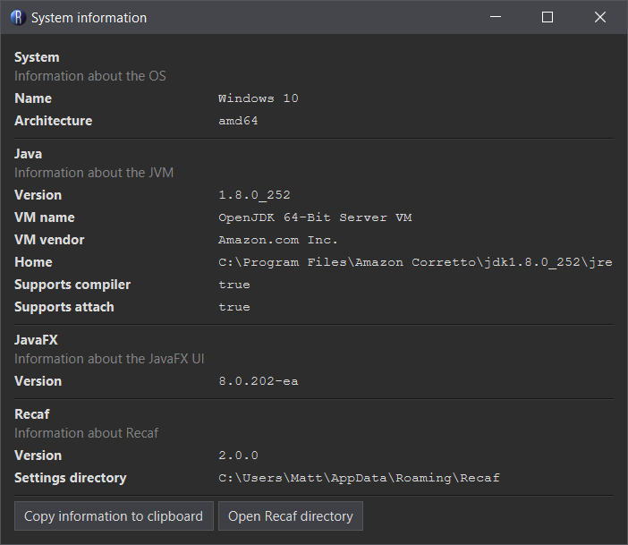

Java 8 setup
JavaFX
Recaf's UI is built using JavaFX. Please ensure your installed version of Java 8 bundles JavaFX. Known supported vendors are:
- Amazon Corretto
- Oracle - Be wary of Oracle's new license before installing.
Note: Recaf can automatically fetch JavaFX when using Java 11+. The reason why this is unsupported in Java 8 is because JavaFX's binaries only became independently released after Java 11. Pulling these future versions is incompatible with Java 8.
Features
Some features of Recaf depend on the Java Development Kit (JDK). The JDK provides additional libraries and tools that are not present in standard Java Runtime Envrionments (JRE). Because of these dependencies it is highly recommended you have a JDK installed and have it set as your primary version of Java.
Recaf imports the following libraries from the JDK:
/lib/tools.jar- compiler, instrumentation/lib/sa-jdi.jar- debugging
These libraries should be automatically discovered by Recaf if they are in the expected directories. You can validate the libraries are loaded by checking the "System information" window, located in the "Help" menu. The information window will have rows including items such as "supports compiler" and "supports attach". These should both be marked as true if everything has loaded properly.
|  |  |